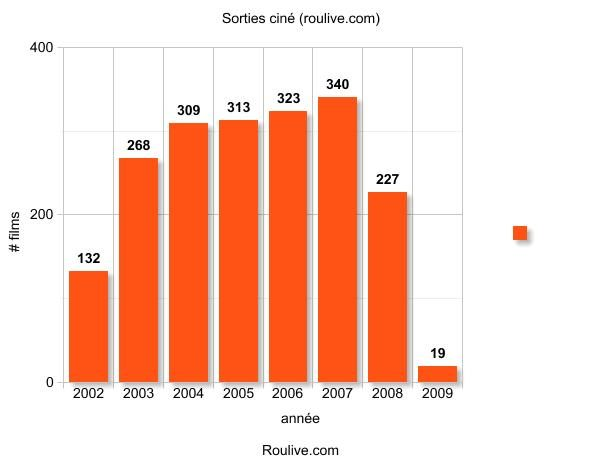

800 films en 5 ans
This post was originally written in French.
Vous connaissez Roulive.com, le site qu'il est bien pour le cinéma?
- Celui qui vous permet de voir les sorties cinéma, les bandes-annonces
- Celui qui vous permet de suivre les films que vous avez vus, aimés, détestés.
- Celui qui vous permet de savoir les films d'autres personnes ont aimé et qui devraient/pourraient vous plaire.
Et bien, sur ce superbe (il est moche, mais pratique) site, je me suis rendu compte que j'avais vu 800 films sur les 5 dernières années. Je ne vais pas vous donner la liste complète, elle est consultable sur le site. Vous avez ci-dessous le nombre de fiches de films dans la DB de Roulive.com, par année. Chaque année il y en a un peu plus. Généralement, j'essaie d'au moins intégrer les 5-6 sorties principales de la semaine. Ca me fait d'ailleurs penser que je vais ouvrir tous les outils d'admin à tout le monde, histoire que chacun puisse insérer les films qui manquent. Mais bon, faut que je prenne le temps de rendre cela un peu convivial quand même, à défaut d'être beau. 

Sur les 5 années et 800 films vu, globalement, j'en ai adoré 16, et j'en ai vu 358 pas tops, et surtout une vingtaine très mauvais. Ci-dessous, sont qui sont réellement sortis du lot. En relisant la liste, je me demande d'abord si je redonnerais la même maintenant, et surtout, je me dis que depuis 2002, le cinéma n'est pas bien riche. Certes il y a des choses magnifiques comme Crash et Mystic River et des purs films de cinéma, mais quand même.
Dans la liste, on remarque deux Peter Jackson, deux Tarantino, deux Eastwood, deux Scorsese, et aussi un Spielberg, un Audiard, un Fincher. Les maîtres sont là en force.
| LOTR - The Return of The King | - (9.2/10) - A voir |
| Kill Bill: Volume 2 | - (9.1/10) - A voir |
| War of the Worlds | - (9/10) - A voir |
| Le voyage de Chihiro | - (9/10) - A voir |
| LOTR - The Fellowship of the ring | - (9/10) - A voir |
| Kill Bill: Volume 1 | - (8.8/10) - A voir |
| Mystic River | - (8.5/10) - A voir |
| Zodiac | - (8.5/10) - A voir |
| Million Dollar Baby | - (8.5/10) - A voir |
| Sin City | - (8.5/10) - A voir |
| Crash | - (8.5/10) - A voir |
| De battre mon coeur s'est arrêté | - (8.5/10) - A voir |
| Munich | - (8.5/10) - A voir |
| The aviator | - (8.5/10) - A voir |
| Batman Begins | - (8.5/10) - A voir |
| La Meglio Gioventu | - (8.5/10) - A voir |
PS: d'ailleurs, si l'un de vous se sent investi d'une mission de re-design sur de Roulive.com, je suis preneur.
Comments 1
YomVoix, 2007-07-29 13:53
Cher coperdant ton heure de gloire est arrivée : http://worldcrea.free.fr/wordpress